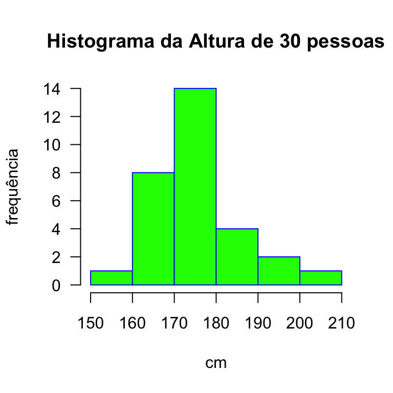

CAPÍTULO 1 Estatística Descritiva
O conteúdo deste tópico foi elaborado com base no capitulo 2 de Sartoris (2013) e nos capítulos 4 e 5 de Hoffmann (2006).
1.1 Medidas de posição
Trata-se de medidas de tendência central ou resumo. Como os nomes dizem, tratam-se de medidas que tratam de resumir a massa de valores e um único número.
1.1.1 Variável Aleatória
- variável aleatória (v.a.) é uma variável que está associada a uma distribuição de probabilidade.
- Ou seja, cada valor da v.a. está associada a uma probabilidade.
- O resultado do lançamento de uma dado, que poder ser qualquer número de 1 a 6, está associada a uma probabilidade de \(1/6\).
1.1.2 Média Aritmética Simples
\[\begin{equation} \overline{X} = \frac{1}{n} \sum_{i=1}^{n} X_i \tag{1.1} \end{equation}\] onde \(i =1, ...,n\)
Exemplo 1
Qual é a média aritmética de um grupo de cinco pessoas cujas idades são em ordem crescente, 21,23,25,28 e 31. Para responder, basta aplicar (1.1).
\[\begin{equation*} \overline{X} = \frac{21+23+25+28+31}{5} = 25,6 \end{equation*}\]
Exemplo 1 no R
## [1] 21 23 25 28 31## [1] 25,6Exemplo 2
Qual é a média aritmética de três provas realizadas por um aluno, cujas notas foram 4,6 e 8. Para responder, basta aplicar (1.1).
\[\begin{equation*} \overline{X} = \frac{4+6+8}{3} = 6 \end{equation*}\]
Exemplo 2 no R
## [1] 4 6 8## [1] 61.1.3 Média Aritmética Ponderada
Na média aritmética ponderada, cada valor pode ter importância diferentes do outros valores considerados no computo. A frequência dos valores é muito comumente usada para para dar maior ou menor importância relativa entre os valores considerados no computo da média aritmética ponderada. Veja como fica a fórmula para o cálculo da média aritmética ponderada em (1.2)
\[\begin{equation} \overline{X} = \frac{1}{\sum_{i=1}^{n}w_i} \sum_{i=1}^{n} w_i X_i \tag{1.2} \end{equation}\] onde \(w_i\) é a ponderação ou peso associado a iésimo valor de \(X\).
Podemos escrever na forma de frequência relativa dos valores da variável \(X\):
\[\begin{equation} f_i = \frac{w_i}{\sum_{i=1}^{n}w_i} \tag{1.3} \end{equation}\]
Exemplo 3
Qual é a média aritmética de um grupo de vinte alunos, oito com 22 anos, sete de 23 anos, três de 25 anos, um de 28 anos e um de 30 anos. Para responder, basta aplicar (1.2).
\[\begin{equation*} \overline{X} = \frac{22\times 8 + 23\times 7 + 25 \times 3 + 28 \times 1 + 30 \times 1}{20} = 23,5 \end{equation*}\]
Exemplo 3 no R
## [1] 22 23 25 28 30## [1] 8 7 3 1 1## [1] 23,5Exemplo 4
Qual é a média ponderada de três provas realizadas por um aluno, cujas notas foram 4, 6 e 8. A primeira prova tem peso igual a 1, a segunda tem peso igual a 2 e a terceira tem peso igual a 3. Para responder, basta aplicar (1.2).
\[\begin{equation*} \overline{X} = \frac{4 \times 1 + 6 \times 2 + 8 \times 3}{1 + 2 + 3} \cong 6,7 \end{equation*}\]
Exemplo 4 no R
## [1] 4 6 8## [1] 1 2 3## [1] 6,71.1.4 Média Geométrica Simples
Na média geométrica simples, a forma de obter uma medida resumo ou de tendência central é multiplicar todos os \(n\) valores e tirar a raiz enésima do resultado do produtório. Assim é possível ter duas fórmulas para a média geométrica a (1.4) e (1.5).
\[\begin{equation} G = \left(\prod_{i=1}^{n} X_i \right)^{\frac{1}{n}} \tag{1.4} \end{equation}\] ou \[\begin{equation} G = \sqrt[n]{X_1 \times X_2 \times \ldots \times X_n} \tag{1.5} \end{equation}\]
O que acontece se um dos valores de \(X\) for igual a zero? E se um dos valores for negativo?
Exemplo 5
Sejam três valores 4, 6 e 8. Calcule a média geométrica simples.
\[\begin{equation*} \sqrt[3]{4 \times 6 \times 8} \cong 5,7690 \end{equation*}\]
Exemplo 5 no R
## [1] 4 6 8## [1] 5,81.1.5 Média Geométrica Ponderada
Na média geométrica ponderada que podem ser calculadas através de duas fórmulas (1.6) e (1.7), cada valor pode ter uma importância diferente em relação aos outros valores no computo da média geométrica. Muito comumente, esta maior ou menor importância pode estar associada a frequência dos valores considerados no cálculo.
\[\begin{equation} G = \left(\prod_{j=1}^{k} X_j^{w_j} \right)^{\frac{1}{n}} \tag{1.6} \end{equation}\] ou \[\begin{equation} G = \sqrt[n]{X_1^{w_1} \times X_2^{w_2} \times \ldots \times X_k^{w_k}} \tag{1.7} \end{equation}\]
onde a \(\sum_{j=1}^{k} w_j = n\)
Exemplo 6
tomando os valores do exemplo 5 e ponderando por 1,2 e 3, temos:
\[\begin{equation*} \sqrt[6]{4^1 \times 6^2 \times 8^3} \cong 6,5 \end{equation*}\]
O exemplo 6 no R
## [1] "numeric"## [1] 4 6 8## [1] 1 2 3## [1] 6,51.1.6 Média Harmônica
É o inverso da média dos inversos dos valores da variável que pode ser calculada através das fórmulas (1.8) e (1.9).
\[\begin{equation} H = \frac{n}{\sum_{i=1}^{n}\frac{1}{X_i}} \tag{1.8} \end{equation}\]
\[\begin{equation} H = \frac{n}{\frac{1}{X_1} + \frac{1}{X_2} + \ldots + \frac{1}{X_n}} \tag{1.9} \end{equation}\]
O que acontece se um dos valores de \(X\) for igual a zero? Para entender essa situação, use o conceito de limite fazendo o valor tender a zero.
Exemplo 7
Tomando o exemplo das notas, temos:
\[\begin{equation*} H = \frac{3}{\frac{1}{4} + \frac{1}{6} + \frac{1}{8}}\cong 5,5. \end{equation*}\]
1.1.7 Média Harmônica Ponderada
Na média harmônica ponderada, assim como na média aritmética ponderada e na média geométrica ponderada, cada valor pode ter uma importância em relação aos outros valores considerados no seu cálculo. Comumente, a frequência do valor pode associaar uma maior ou menor importância no cálculo da média harmônica ponderada que pode ser calculada através das fórmulas (1.10) e (1.11)
\[\begin{equation} H = \frac{n}{\sum_{j=1}^{k}w_{j}\frac{1}{X_j}} \tag{1.10} \end{equation}\] ou \[\begin{equation} H = \frac{n}{w_1\frac{1}{X_1} + w_2\frac{1}{X_2} + \ldots + w_k \frac{1}{X_k}} \tag{1.11} \end{equation}\]
onde a \(\sum_{j=1}^{k} w_j = n\)
Exemplo 8
Tomando o exemplo das notas
\[\begin{equation*} H = \frac{6}{\frac{1}{4}\times 1 + \frac{1}{6}\times 2 + \frac{1}{8}\times 3}\cong 6,3. \end{equation*}\]
Observação
Tanto para as médias simples como para as ponderadas, a média aritmética é maior do que a média geométrica e essa, por sua vez, é maior que a harmônica. Isso só não vale quando todos os valores são iguais. Veja de forma esquemática em (1.12)
\[\begin{equation} \overline{X} \geq G \geq H \tag{1.12} \end{equation}\]
Exemplo 9
O aluno tira as seguintes notas bimestrais: 3,4,5,7 e 8,5. Determine qual seria sua média final se esta fosse calculada dos três modos, aritmética, geométirca e harmônica, em cada um dos seguintes casos: i) as notas têm o mesmo peso e; ii) as notas têm pesos diferentes.
- As notas dos bimestres têm os mesmos pesos.
\[\begin{equation*} \overline{X} = \frac{3 + 4,5 + 7 + 8,5}{4} = 23/4 = 5,75 \end{equation*}\] \[\begin{equation*} G = \sqrt[4]{3 \times 4,5 \times 7 \times 8,5} = \sqrt[4]{803,25} \cong 5,32 \end{equation*}\] \[\begin{equation*} H = \frac{4}{\frac{1}{3} +\frac{1}{4,5} +\frac{1}{7} +\frac{1}{8,5}} \cong 4,90 \end{equation*}\]
- Suponha que agora os pesos para as notas bimestrais sejam, 30%, 25%, 25% e 20%.
\[\begin{equation*} \overline{X} = 0,3\times 3 + 0,25\times 4,5 + 0,25\times 7 + 0,20 \times 8,5 = 5,475 \end{equation*}\] \[\begin{equation*} G = 3^{0,3} \times 4,5^{0,25} \times 7^{0,25} \times 8,5^{0,2} = \cong 5,05 \end{equation*}\] \[\begin{equation*} H = \frac{1}{0,3\frac{1}{3} +0,25\frac{1}{4,5} +0,25\frac{1}{7} +0,2\frac{1}{8,5}} \cong 4,66 \end{equation*}\]
1.1.8 Mediana
é o valor que divide um conjunto e dados ordenados ao meio, ou seja, dois grupos de valores de igual tamanho. Com base na definição de mediana, o valor da mediana pode ser obtida através da sua posição que proporciona duas situações: i) o número de valores é impar e ii) o número de valores é par.
- Quando o número de valores é impar, a posiçãodo valor correspondente a mediana é obtida através de (1.13):
\[\begin{equation} PMediana_{impar} = \dfrac{n + 1}{2} \tag{1.13} \end{equation}\] onde \(n\) é o número de valores considerado no cálculo.
- Quando o número de valores é par, a posição da mediana é obtida através da média entre os dois valores centrais do conjunto de valores ordenados de menor a maior. O primeiro valor central é definido pela posição obtida através de (1.14)
\[\begin{equation} P1Mediana_{par} = \dfrac{n}{2} \tag{1.14} \end{equation}\] onde \(n\) é o número de valores considerado para o cálculo.
O segundo valor central é definido pelas posição obtida através de (1.15)
\[\begin{equation} P2Mediana_{par} = \dfrac{n}{2} + 1 \tag{1.15} \end{equation}\] onde \(n\) é o número de valores considerado para o cálculo.
Assim, a mediana quando o número de valores é par é obtida através da média aritmética simples dos valores correspondentes as posições obtidas por (1.14) e por (1.15) através de (1.16)
\[\begin{equation} Mediana_{par} = \dfrac{ValorCentral_1 + ValorCentral_2}{2} \tag{1.16} \end{equation}\]
Exemplo numérico de Mediana quando o número de valores é impar
Seja um conjunto de valores 2,-3,1,-2,0,-1,3. Obtenha a mediana.
Primeiramente ordena-se do menor para o maior.
-3,-2,-1,0,1,2,3
Como se trata de número impar de valores o valor central que divide o conjunto de valores em dois subconjuntos de igual tamanho é o valor da mediana. Neste caso é o zero.
Mediana no R
## [1] 0Exemplo numérico de Mediana quando o número de valores é par
No exemplo anterior o conjunto de dados era composto por um número ímpar de valores. Neste exemplo o número de valores ordenado de menor a maior é par. Nesse caso, apesar de existir vários critérios, o mais usual é tirar a média aritmética simples entre os dois valores centrais do conjunto de valores ordenados de menor a maior. Uma vez que não existe um valor que separe dois subconjuntos de igual tamanho, a média aritmética simples destes dois valores é o valor da mediana quando o número total de valores não é impar.
Sejam os valores -2,1,3,2,-3,1. Obtenha a mediana.
Primeiramente ordena-se os seis valores.
-3,-2,-1,1,2,3
Note que trata-se de conjunto com um número par de valores.
Dessa forma, toma-se os dois valores centrais que são -1 e 1 e calcula-se a média aritmética simples. Ou seja, a mediana para este conjunto com seis valores é igual a zero.
O exemplo do número par de valores no R
## [1] 01.1.9 Quartis ou Quartiles
são os valores que dividem o conjunto de dados ordenados em quatro subjconjuntos de igual tamanho. Ou seja são valores do conjunto que definem o primeiro quarto dos dados (25%), a metade dos dados (50%) que coincide com a mediana, os três quartos dos dados (75%).
Dessa forma para obter os valores que dividem o conjunto de dados ordenados de menor a maior e quatro subconjuntos de igual tamanho, é necessário definir qual é a posição desses valores. Uma vez definido as suas posições pode-se obter os valores corretamente.
A posição do valor que separa o primeiro do segundo quartil é definido por (1.17).
\[\begin{equation} PQ_1 = \dfrac{(n +1)}{4} \tag{1.17} \end{equation}\] onde \(n\) é o número de valores. A posição do valor que separa o segundo do terceiro quartil é definido por (1.18).
\[\begin{equation} PQ_3 = \dfrac{3(n +1)}{4} \tag{1.18} \end{equation}\] onde \(n\) é o número de valores.
Note que o termo genérico é percentil. Por exemplo, o quintis são os valores que dividem o conjunto de ados ordenados de menor a maior em cinco subconjuntos de igual tamanho.
Quartis no R
No R tem uma função específica para a obtenção dos quartis.
## [1] 101## 0% 25% 50% 75% 100%
## 0 25 50 75 100## 75%
## 50Quartis no R
No R tem uma função específica para a obtenção dos quartis.
## [1] 100## 0% 25% 50% 75% 100%
## 1,00 25,75 50,50 75,25 100,00## 75%
## 49,51.1.10 Moda
é o elemento de maior frequência, ou seja, que aparece o maior número de vezes. Pode haver mais de uma moda em um conjunto de valores:
- Unimodal
- Bimodal
- Multimodal
- Amodal
Moda no R Não existe uma função da moda para pronto uso no R. É necessário criar uma função segue abaixo.
# criando a função moda no R
getmode <- function(v) {
uniqv <- unique(v)
uniqv[which.max(tabulate(match(v, uniqv)))]
}
z <- c(2, 1, 2, 3, 1, 2, 3, 4, 1, 5, 5, 3, 2, 3)
moda1 <- getmode(z)
print(moda1)## [1] 21.2 Medidas de dispersão
Este tópico está baseado nos materiais de Hoffmann (2006), Morettin and Bussab (2013) e Sartoris (2013).
As medidas de dispersão medem como os dados estão agrupados, mais ou menos próximos entre si,ou seja, mais ou menos dispersos.
1.2.1 Amplitude
A amplitude de um conjunto de valores é a diferença entre o maior elemento e o menor elemento desse conjunto.
1.2.2 Variância
A variância é a somatória dos quadrados dos desvios em relação a média, dividido pelo número de observações. Note que a ideia inicial de dispersão foi a distância de cada valor do conjunto dados da variável em relação à media da variável. Mas como trata-se da distância relativa de cada valor em relação a média dos valores da variável, a sua somatória sempre resulta zero. Pois os desvios em relação a médias são compostos de valores positivos e negativos por estarem acima ou abaixo da média e assim a somatória das mesmas resulta zero, sempre. Portanto, a soma dos desvios não tem utilidade como medida de dispersão. Mas se a soma for dos quadrados dos desvios, isso é resolvido. Por isso, a variância é o valor médio dos quadrados dos desvios em relação à media. Ou seja,
\[\begin{equation*} var(X) =\sigma^2 = \frac{\sum_{i=1}^{n}(X_i - \overline{X})^2}{n}~\text{(população)} \end{equation*}\]
\[\begin{equation*} var(X) =\sigma^2 = \frac{\sum_{i=1}^{n}(X_i - \overline{X})^2}{n-1}~\text{(amostra)} \end{equation*}\]
Note que a variância da amostra é um estimador não viesado da variância populacional. A diferença entre variância populacional e variância amostral será apresentada mais adiante. A interpretação intuitiva da diferença entre ambas as variâncias é de que quando se trabalha com amostra, está tendo acesso a parte das informações e isso precisa ser penalizado. Note que esta penalização se dá para amostras pequenas pois se trata de subtrair uma unidade do número de observações. O que acontece com a diferença entre variância populacional e a variância amostral quando i) o número de observações torna-se muito grande, tipo bem maior que 30 e; ii) o número de observações tende ao infinito.
Variância no R
Aproveitando os dados de alturas de 30 pessoas:
## [1] 21 23 25 28 31## [1] 15,8Note que a variância no R é a variância amostral, cujo denominador é \((n-1)\).
Em termos práticos, a variância tem uma desvantagem: a unidade do seu resultado é o quadrado da unidade original da variável. Portanto, se a variável em questão é preço de uma mercadoria em Reais, a sua variância será Reais ao quadrado. Tal fato dificulta a sua interpretação. Por isso é apresentado o desvio padrão como medida de dispersão na sequência.
1.2.3 Desvio Padrão
É a raiz quadrada da variância. No desvio padrão, denotado como \(d.p.(X)\) ou \(\sigma\), não tem o efeito do quadrado.
\[\begin{equation*} d.p.(X) \cong \sigma = \sqrt{var(X)} \end{equation*}\]
Portanto, a sua interpretação é clara e direta por ter a mesma unidade da sua variável original. Desta forma, o desvio padrão facilita a sua análise juntamente com as medidas de posição como a média aritmética simples, por exemplo.
Desvio Padrão no R
## [1] 21 23 25 28 31## [1] 3,9749Note que, da mesma forma que a variância no R, o desvio padrão calculado no R tem como base a variância cujo numerador é \((n-1)\).
Fórmula alternativa da Variância
Desenvolvendo a fórmula da definição da variância tem-se: \[\begin{align*} var(X) &= \frac{1}{n}\sum_{i=1}^{n}(X_i - \overline{X})^2 \\ &= \frac{1}{n}\sum_{i=1}^{n}(X_i^2 - 2X_i\overline{X} + \overline{X}^2)\\ &= \frac{1}{n}\sum_{i=1}^{n}X_i^2 - \frac{1}{n}\sum_{i=1}^{n}2X_i\overline{X}+ \frac{1}{n}\sum_{i=1}^{n}\overline{X}^2\\ &= \frac{1}{n}\sum_{i=1}^{n}X_i^2 - 2\overline{X}\frac{1}{n}\sum_{i=1}^{n}X_i+ \frac{1}{n}n\overline{X}^2\\ &= \frac{1}{n}\sum_{i=1}^{n}X_i^2 - 2\overline{X}\overline{X}+ \overline{X}^2\\ &= \frac{1}{n}\sum_{i=1}^{n}X_i^2 - \overline{X}^2. \end{align*}\]
Em outras palavras
\[\begin{equation*} var(X) = \text{média dos quadrados} - \text{quadrado da média}. \end{equation*}\]
Exemplo de variância e desvio padrão no R
Tomando o exemplo numérico da tabela 2.7 (Sartoris, 2013, p.40) sobre notas do aluno A tem-se:
| Aluno A | notas | \(notas^2\) |
|---|---|---|
| Economia | 3 | 9 |
| Contabilidade | 2 | 4 |
| Administração | 4 | 16 |
| Matemática | 1 | 1 |
| Somatória | 10 | 30 |
| Média | 2,5 | 7,5 |
\[\begin{equation*} var(X) = 7,5 - (2,5)^2 = 1,25 \end{equation*}\]
\[\begin{equation*} dp(X) = \sqrt{1,25} = 1,12 \end{equation*}\]
X3 <- c(3, 2, 4, 1)
mediaX3e2 <- sum(X3^2)/length(X3)
mediaX3 <- sum(X3)/length(X3)
varX3 <- mediaX3e2 - mediaX3^2
varX3## [1] 1,25## [1] 1,1181.2.4 Desvio Absoluto Médio
Por definição, o desvio absoluto médio de um conjunto de dados \[ X_1, X_2, \ldots, X_n \] é a média aritmética dos valores absolutos dos desvios em relação a média de \(X_i\), \[ \delta = \dfrac{1}{n} \sum_{i=1}^{n} \left| X_i - \overline{X} \right|. \tag{1.19} \] Se os valores de X estiverem em ordem crescente
\[ X_1\leq X_2 \leq , \ldots, X_n, \] sendo válida pelos menos uma desigualdade, e se \(h\) é um inteiro positivo tal qual que \[ X_i < \overline{X}~~para~1 \leq i \leq h \] e \[ X_i \geq \overline{X}~~para~h < i \leq n, \] temos \[ \delta = \dfrac{1}{n}\left[ - \sum_{i=1}^{h}\left( X_i - \overline{X} \right) + \sum_{i=h+1}^{n} \left( X_i - \overline{X} \right) \right] \tag{1.20} \] Como a soma dos \(n\) desvios em relação á média \(\overline{X}\) é zero \[ \sum_{i=1}^{n} \left(X_i - \overline{X} \right) = 0 \] segue-se que \[ \sum_{i=h+1}^{n} \left( X_i - \overline{X} \right) = - \sum_{i=1}^{h}\left( X_i - \overline{X} \right). \tag{1.21} \] Substituindo (1.21) em (1.20) se tem
\[ \delta = \dfrac{2}{n} \sum_ {i=h+1}^{n}\left( X_i - \overline{X} \right) = \dfrac{2}{n} \sum_ {i=1}^{h} \left( \overline{X} - X_i \right) \tag{1.22} \] Note que se pode economizar cálculos se optar por uma das fórmulas do desvio absoluto médio dado por (1.22). O desvio absoluto médio será utilizado mais adiante para definir a fórmula da discrepância máxima na seção sobre o índice de Gini.
1.2.5 Diferença Absoluta Média
Por definição, a diferença absoluta média de um conjunto de dados \[ X_1, X_2, \ldots, X_n \] é dado por \[ \Delta = \dfrac{1}{n^2} \sum_{i=1}^{n} \sum_{j=1}^{n} \left| X_i - X_j \right|. \] Se \[ X_1 \leq X_2 \leq , \ldots, X_n \] é possível escrever os valores de \(X_i -X_j\), com \(i+1,\ldots, n\) e \(j=1,\ldots,n\), com segue
\[ \begin{array}{ccccc} X_n - X_n & X_n - X_{n-1} & \cdots & X_n - X_2 & X_n - X_1 \\ X_n - X_{n-1} & X_{n-1} - X_{n-1} & \cdots & X_{n-1} - X_2 & X_{n-1} - X_1 \\ \vdots & \vdots & \ddots & \vdots & \vdots \\ X_n - X_2 & X_{n-1} - X_2 & \cdots & X_2 - X_2 & X_1 - X_1 \\ X_n - X_1 & X_{n-1} - X_1 & \cdots & X_2 - X_1 & X_2 - X_1 \end{array} \] Coletando os termos positivos e os negativos, se tem \[ \begin{split} \Delta & = \dfrac{1}{n^2} \left[ X_1 + 3X_2 + \ldots + (2n - 3)X_{n-1} + (2n-1)X_n \right] - \\ & - \dfrac{1}{n^2}\left[ X_n - 3X_{n-1} + \ldots + (2n - 3)X_2 + (2n -1)X_1 \right] \end{split} \tag{1.23} \] Note que o segundo membro de (1.23) (lado direito) é a soma algébrica de duas parcelas de sinais contrários, seu valor não se altera se for adicionado a cada uma das expressões entre colchetes a expressão
\[ \left[X_n + 3X_{n-1} + \ldots + (2n - 3)X_2 + (2n - 1)X_1 \right]. \] Dessa forma se obtém \[ \begin{split} \Delta & = \dfrac{1}{n^2} 2n\left[ X_1 + X_2 + \ldots + X_+{n-1} + X_n \right] - \\ & - \dfrac{2}{n^2}\left[ X_n + 3X_{n_1} + \ldots + (2n-3)X_2 + (2n-1)X_1 \right]. \end{split} \] Como \[ \sum_{i=1}^{n}X_i = n \overline{X} \] se tem \[ \Delta = 2\overline{X} - \dfrac{2}{n^2}\left[ (2n-1)X_1 + (2n-3)X_2 + \ldots + 3X_{n-1} + X_n \right]. \tag{1.24} \] Somanda e subtraindo
\[ \sum_{i=1}^{n}X_i = n\overline{X} \] à expressão entre colchetes em (1.24) se tem
\[ \Delta = 2\overline{X} \left( 1 + \dfrac{1}{n} \right) - \dfrac{4}{n^2} \left[ nX_1 + (n-1)X_2 + \ldots + 2X_{n-1} + X_n \right] \] ou \[ \Delta = 2\overline{X} \left( 1 + \dfrac{1}{n} \right) - \dfrac{4}{n^2} \sum_{i=1}^{n}(n-i+1)X_i. \tag{1.25} \] Com mais algumas transformações algébricas de (1.25) se tem
\[ \Delta = \dfrac{4}{n^2} \sum_{i=1}^{n} iX_i - 2\overline{X}\left( 1 + \dfrac{1}{n} \right) \tag{1.26} \]
Note que a fórmula da diferença média absoluta será utilizada mais adiante para a obtenção da fórmula do índice de Gini.
1.2.6 Histograma
O histograma é uma ferramenta da estatística descritiva para mostrar visualmente, de forma bastante simples, como os valores da variável estão distribuídos. Mas também permite ter uma ideia visual da dispersão do conjunto de valores. Portanto, não se trata de uma medida de dispersão. Mas deveria ser a primeira coisa a se obter das variáveis de interesse em um trabalho de pesquisa.
Considere a altura de 30 pessoas medidas em centímetros.
Tabela 2.1 - Altura de 30 pessoas em cm.
| 159 | 168 | 172 | 175 | 181 |
| 161 | 168 | 173 | 176 | 183 |
| 162 | 169 | 173 | 177 | 185 |
| 164 | 170 | 174 | 178 | 190 |
| 166 | 171 | 174 | 179 | 194 |
| 167 | 171 | 174 | 180 | 201 |
Usando o R para construir o histograma do exemplo numérico
Os dados são inputados na variável X.
X <- c(159, 161, 162, 164, 166, 167, 168, 168, 169,
170, 171, 171, 172, 173, 173, 174, 174, 174, 175,
176, 177, 178, 179, 180, 181, 183, 185, 190, 194,
201)
head(X)## [1] 159 161 162 164 166 167## [1] 30## [1] 159 201Usando a função hist do R para elaborar o histograma de altura
grafico1 <- hist(
X,
main="Histograma da Altura",
xlab="cm",
ylab="frequência",
border="blue",
col="green",
xlim=c(150,210),
las=1,
breaks=5,
right=FALSE
)
grafico1onde
- main=“Histograma da Altura de 30 pessoas” titulo do histograma
- xlab=“cm” rotulo do eixo horizontal
- ylab=“frequência” rotulo do eixo vertical
- border=“blue” cor do contorno das barras
- col=“green” cor das barras
- xlim=c(150,210) limite inferior e superior
- las=1 rotacao do rotulo dos numeros do eixo vertical
- breaks=5 número de classes
- right=FALSE define intervalo do tipo [a,b), se FALSE, e (a,b], se TRUE.
Obtendo o histograma

O pacote ggplot2 gera gráficos e histogramas melhor elaborados.
Obtendo o histograma usando uma forma alternativa
Agrupando essas pessoas em classes de 10 cm temos:
| classes | frequência |
|---|---|
| [150 ; 160[ | 1 |
| [160 ; 170[ | 8 |
| [170 ; 180[ | 14 |
| [180 ; 190[ | 4 |
| [190 ; 200[ | 2 |
| [200 ; 210[ | 1 |
Fazendo isso no R:
## nobs X
## 25 25 181
## 26 26 183
## 27 27 185
## 28 28 190
## 29 29 194
## 30 30 201# mostrando as seis últimas observações
quebras <- seq(150, 210, by = 10)
# definindo os intervalos
quebras## [1] 150 160 170 180 190 200 210dataX.cut <- cut(dataX$X, quebras, right = FALSE)
# construindo as classes fechado a esq e aberto a
# direita
dataX.freq <- table(dataX.cut)
# obtendo a frequência para cada classe.
dataXfreq <- cbind(dataX.freq)
# colocando os dados em colunas
dataXfreq## dataX.freq
## [150,160) 1
## [160,170) 8
## [170,180) 14
## [180,190) 4
## [190,200) 2
## [200,210) 11.2.7 Diagrama de caixa (Boxplot)
O texto sobre o diagrama de caixa foi baseado em Morettin and Bussab (2013).
Boxplot ou caixa de bigode também é uma ferramenta da estatística descritva que permite visualizar a dispersão dos valores da variável em análise. O que define o diagrama de caixa são os quartis. A parte inferior e superior da caixa, são respectivamente o primeiro quartil (\(Q_1\)) e o terceiro quartil (\(Q_3\)). A linha que corta da caixa é a mediana ou o segundo quartil (\(Q_2\)). Os bigodes que são as linhas que se estendem a partir da caixa, são calculado com base na amplitude interquartil (\(AIQ\)). A amplitude interquartil é a diferença entre os valores do terceiro e do primeiro quartis. Ou seja,
\[\begin{equation*} AIQ = Q_3 - Q_1 \end{equation*}\]
O bigode inferior denominado \(LI\) é calculado subtraindo \(1,5\times AIQ\) do valor do primeiro quartil \(Q_1\). Ou seja,
\[\begin{equation*} LI = Q_1 - 1,5 \times AIQ \end{equation*}\]
O bigode superior, denominado \(LS\), é calculado somando \(1,5\times AIQ\) ao valor da terceiro quartil \(Q_3\). Ou seja,
\[\begin{equation*} LS = Q_1 + 1,5 \times AIQ \end{equation*}\]
Os valores que forem menor que o \(LI\) ou maior que o \(LS\) são denominados valores discrepantes oui outliers. Os valores discrepantes, quando existentes, são colocados separadamente no diagrama de caixa mantendo a distancia relativa do limite inferior ou do limite superior.
Toma-se o mesmo exemplo da altura de 30 pessoas para apresentar o boxplot.
O código seria:
e o resultado segue abaixo.

1.3 Medidas de relação linear entre duas variáveis
Este assunto tem como base o material de Sartoris (2013).
Parece um pouco estranho incluir esse tópico logo depois das medidas de dispersão. Mas a variância é um caso especial da covariância que é a primeira medida de relação linear entre duas variáveis.
O coeficiente de correlação utiliza a covariância e o desvio padrão para resolver o problema de interpretação do resultado da covariância.
1.3.1 Covariância
pode ser estendida como uma variância conjunta entre duas variáveis. Ou seja, \[\begin{equation*} cov(X,Y) = \frac{1}{n}\sum_{i=1}^{n}(X_i - \overline{X})(Y_i - \overline{Y}) \end{equation*}\]
Fórmula alternativa da Variância
Também existe a fórmula alternativa da covariância.
\[\begin{equation*} cov(X,Y) = \frac{1}{n}\sum_{i=1}^{n}X_{i}Y_{i} - \overline{X}\overline{Y}. \end{equation*}\]
Fórmula alternativa da Covariância
Em outras palavras
\[\begin{equation*} cov(X,Y) = \text{média dos produtos de X e Y} - \text{produto das médias de X e Y}. \end{equation*}\]
Covariância no R
Tomando o exemplo de consumo e renda da tabela 2.11 (Sartoris, 2013, p.42) tem-se
| Ano | Consumo(X) | Renda(Y) | (XY) |
|---|---|---|---|
| 1 | 600 | 1.000 | 600.000 |
| 2 | 700 | 1.100 | 770.000 |
| 3 | 800 | 1.300 | 1.040.000 |
| 4 | 900 | 1.400 | 1.260.000 |
| Somatória | 3.000 | 4.800 | 3.670.000 |
| Média | 750 | 1.200 | 917.500 |
Covariância no R
C1 <- c(600, 700, 800, 900)
R1 <- c(1000, 1100, 1300, 1400)
mediaC1 <- sum(C1)/length(C1)
mediaR1 <- sum(R1)/length(R1)
mediaC1R1 <- sum(C1 * R1)/length(C1)
covC1R1 <- mediaC1R1 - mediaC1 * mediaR1
covC1R1## [1] 17500## [1] 23333,33Note que a função covariância no R é calculada dividindo por \((n-1)\) e não por \(n\).
1.3.2 Coeficiente de Correlação
É obtido dividindo a covariância pelos desvios padrões das variáveis, retirando-se o efeito dos valores de cada variável. Como as unidades das variáveis se cancelam matematicamente, o coeficiente de correlação é um número puro que varia entre -1 e +1. Essa característica o torna mais fácil e claro a sua interpretação. Ou seja,
\[\begin{equation*} corr(X,Y) \cong \rho_{xy} = \frac{cov(X,Y)}{dp(X) \times dp(Y)} \end{equation*}\] onde \[\begin{equation*} -1 \leq \rho \leq +1 \end{equation*}\]
Portanto, quando o coeficiente de correlação é igual a zero ou muito próximo a zero, significa que as duas variáveis analisadas não tem relação do tipo linear entre elas. Quando a o coeficiente de correlação é igual a -1 ou próximo de -1, tal fato indica que a existência de uma relação do tipo linear entre as duas vari áveis analisadas, sendo que as variações ocorrem no setido oposto. Ou seja, quando uma das variáveis aumenta de valor, a outra diminui. Quando o coeficiente de correlação é igual a +1 ou muito próximo de um positivo, tal fato indica que as duas variáveis tem uma relação do tipo linear, sendo que as variações em ambas as variáveis ocorrem no mesmo sentido. Ou seja, quando uma das variáveis aumenta de valor, a outra aumenta também. O que significa o coeficiente de correlação ser: i) exatamente igual a zero; ii) ser exatamente igual a -1 e; exatamente igual a +1?
Correlação no R
medC1 <- sum(C1)/length(C1)
medR1 <- sum(R1)/length(R1)
varC1 <- (sum((C1 - medC1)^2))/length(C1)
varC1## [1] 12500## [1] 25000dpC1 <- abs(sqrt(varC1))
dpR1 <- abs(sqrt(varR1))
corrC1R1 <- round(covC1R1/(dpC1 * dpR1), 4)
corrC1R1## [1] 0,9899Ou simplesmente
## [1] 0,9899Referências
Hoffmann, Rodolfo. 2006. Estatística para Economistas. 4th ed. São Paulo: Cengage Learning.
Morettin, Pedro A., and Wilton de O. Bussab. 2013. Estatística Básica. 8th ed. São Paulo: Saraiva.
Sartoris, Alexandre. 2013. Estatística e Introdução à Econometria. 2nd ed. São Paulo: Saraiva.